Organigrama
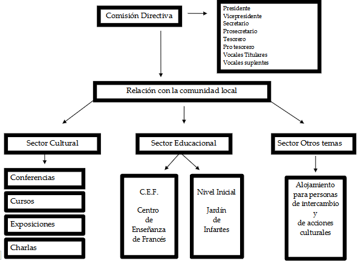Comisión Directiva
| Cargo | Apellido y Nombre |
| Presidenta | Rosa Haydée Maxit |
| VicePresidenta | Celia Emma Vernaz |
| Secretario | Hugo César Martín |
| Prosecretario | Gloria Miriam Ballay |
| Tesorero | Susana María Dubois |
| Protesorero | Gaston Emilio Rossier |
| Vocal Titular 1° | Marta Beatriz Insúa-Bel |
| Vocal Titular 2° | Virginia Maxit |
| Vocal Titular 3° | Estela Isabel Izquierdo-Vauthay |
| Vocal Titular 4° | Lilia Ester Bianchi |
| Vocal Suplente 1° | Graciela Elena Zanini-Vernaz |
| Vocal Suplente 2° | Ana María Tramontin |
| Vocal Suplente 3° | Sonia Virginia Smietano |
| Vocal Suplente 4° | Aurora Eugenia Montaño |
| Revisor de Cuentas Titular 1° | Nadia Soledad Smietano |
| Revisor de Cuentas Titular 2° | Raúl Alberto Martínez |
| Revisor de Cuentas Suplente 1° | María Silvina Palacios |
| Revisor de Cuentas Suplente 2° | Silvina Noemí Laurent |
Objetivos y Actividades
El Centro Saboyano de San José
Nació en 1989 como un medio de enlace entre los saboyanos y los habitantes de San José relacionados por sangre y afecto a esa “familia” europea. Surge como un desmembramiento de la Asociación “Amigos del Museo Histórico Regional de la Colonia” hasta que en 1996 obtiene su propia personería jurídica.-
Objetivos:
- Difundir e intensificar el estudio de la lengua francesa.
- Realizar investigaciones genealógicas e históricas.
- Acentuar las relaciones socioculturales y afectivas con los habitantes de Saboya.
- Preservar las tradiciones y costumbres de nuestros ancestros.
- Proyectar las manifestaciones culturales del Centro a la comunidad.
- Integrar pueblos y culturas en una acción permanente y recíproca.
- Servir a los interesas comunitarios y propender al bien común.
Actividades
- Dictado de clases de francés, en distintos niveles.
- Jardín de infantes bilingüe.
- Investigaciones históricas y genealógicas,
- Recepción, alojamiento y atención de visitantes saboyanos y delegaciones especiales.
- Organización de eventos culturales.
- Participación en la Fiesta Nacional de la Colonización.
- Interrelación permanente con otras instituciones culturales (Museo Histórico Regional, Alianza Francesa, Comité de Asociaciones francesas y franco-argentinas).-
- Acopio de bibliografía y organización de la biblioteca en lengua francesa.-
El Edificio
a. Su inauguración
El 12 de noviembre de 2000, y ante la presencia del Embajador y del Cónsul General de Francia Sres. Paul Dijoud y Jean-Louis Rysto respectivamente, del Vice-Gobernador de la provincia de Entre Ríos, Sr. Edelmiro Pauletti, del Vicepresidente del Consejo General de Alta Saboya e Intendente de Ville La Grand: Sr. Raymond Bardet, autoridades locales y departamentales y ante la presencia de 150 saboyanos encabezados por el presidente de la Asociación Savoie-Argentine de Haute Savoie, Francia, Sr. Jean Favre, fue inaugurado el nuevo edificio que se alza en la esquina de Urquiza 1001.
El edificio, que se realizó con el aporte de capitales franceses, sobre un terreno donado por la Municipalidad de San José, concitó la atención y despertó admiración desde el nacimiento del proyecto. Efectivamente, el estilo y buen gusto de su diseño fue siempre admirado por quienes pasaban por el lugar.
Es de dos pisos: en la planta baja posee un salón de exposiciones y conferencias, dirección y sala de jardín de infantes, en tanto que en el primer piso se ubican las aulas de clase, sala de computación y biblioteca. Cuenta además con un departamento, también distribuido en dos pisos, que se alquila a turistas que visitan la zona.
Quince días antes de la inauguración y como una manera de demostrar el fraternal cariño que sienten los saboyanos por San José, cuatro de ellos viajaron especialmente a fin de realizar los tradicionales balcones que engalanan las fachadas interior y exterior.-
Como expresó Antoine de Saint-Exupéry: “Ser hombre es estar orgulloso por la victoria. Es sentir posando uno su piedra, que se contribuye a construir el mundo.” El Centro Saboyano de San José, es la suma de grano de arena sobre grano de arena y de ladrillo sobre ladrillo. Es también el resultado del esfuerzo de una comunidad que no olvida sus orígenes.
b. Ampliaciones y mantenimiento
El edificio que se inició con una sola sala de Jardín de infantes, hoy cuenta con cuatro más: dos en planta baja y dos en el primer piso. De todas ellas, hay una aún no ha sido finalizada. Todo esto se ha logrado gracias a presentaciones de proyectos al gobierno de Entre Ríos, a la colaboración de la Asociación Savoie-Argentine y a los beneficios que se realizan en la institución.
Por otra parte son múltiples las acciones que se han llevado a cabo para mantener el edificio en condiciones: colocación de césped sintético en el patio del jardín lo que le permite a las docentes desarrollar sus actividades con mayor protección para los niños, pintura exterior e interior.
Cursos de francés
El objetivo fundamental del Centro Saboyano es el estudio de la lengua francesa en todos los niveles requeridos: niños, adolescentes y adultos.-
Si bien se comenzó a dictar clases a los adultos, a partir de la creación del Jardín, muchos fueron los padres que desearon que sus hijos continuaran con el aprendizaje de la lengua. Hoy esa primera promoción de niños de jardín, casi todos ellos profesionales, muchos de ellos ya casados, han continuado con la tradición de enviar sus hijos a la institución porque comprendieron que saber francés es marcar una diferencia. Diferentes profesores han pasado por sus aulas: Emilia Rivollier, hoy directora de la Alianza Francesa de Gualeguaychú, en esta provincia de Entre Ríos, Leticia Benítez, Nancy César, Matías Sauthier y Carina Pralong.- Todos ellos han realizado pasantías en Francia, todas siguen dictando sus clases en sus propios emprendimientos, en establecimientos secundarios, terciarios y universitarios 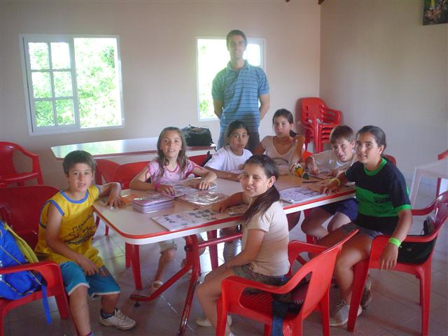 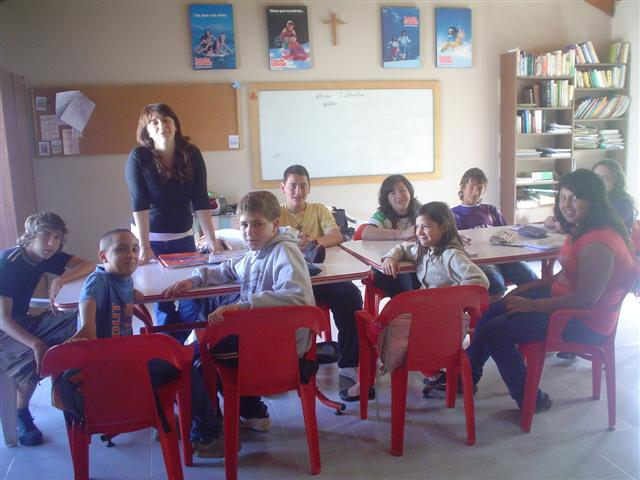 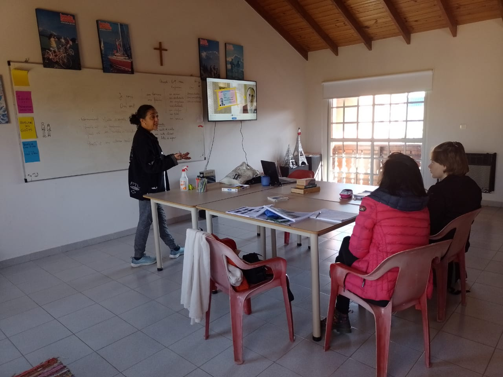
Jardin de Infantes
Desde 1993 el Centro Saboyano de San José cuenta con un jardín de infantes bilingüe llamado P’tit Poisson y al que asisten hoy niños de 1, 2, 3 y 4 años. La primera maestra jardinera fue la profesora Leticia Benítez, en ese momento estudiante del profesorado de francés, pero con extraordinarias condiciones para trabajar con niños por lo que pronto se ganó su confianza. No obstante no fue sino a partir de 2010 que se comenzó a armar el proyecto de reconocimiento por parte del Consejo General de Educación y así en 2011, por Resolución Nº 2474 se reconoció la creación de la Unidad Educativa Nº 224, “P’tit Poisson” para nivel inicial (salas de 3 y 4 años) incorporándose de este modo a la enseñanza oficial. Por otra parte, por disposición 0551 del 3 de octubre de 2012, se reconoce la sala de 2 años.
En la elaboración de ese proyecto trabajaron las profesoras Raquel Alicia Livio y Rosa Haydee Maxit, esta última presidenta de la institución desde su creación en 1989. Ambas fueron las responsables de la formulación de los PEI (Proyecto Educativo Institucional) y PCI, (Proyecto Curricular Institucional) ; las docente Nadia Smietano, Andrea Falco y María Isabel Acevedo , todas profesoras de Nivel Inicial realizaron la Planificación de los Proyectos Curriculares de Sección en tanto que Nancy César y Matías Udrizard Sauthier, profesores de Francés, tuvieron a su cargo la organización del CEF (Centro de Estudios de Francés)
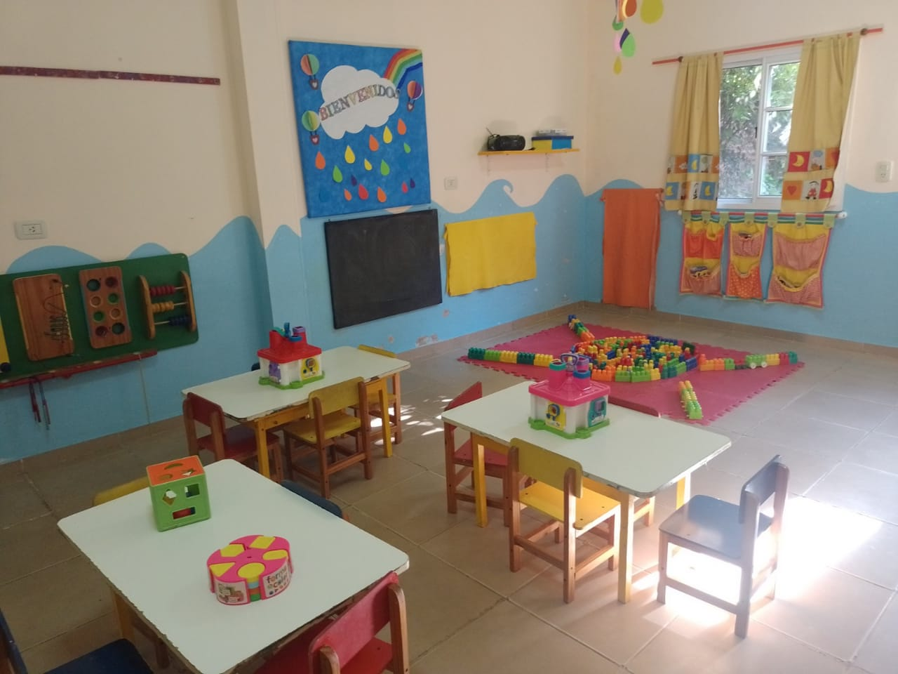 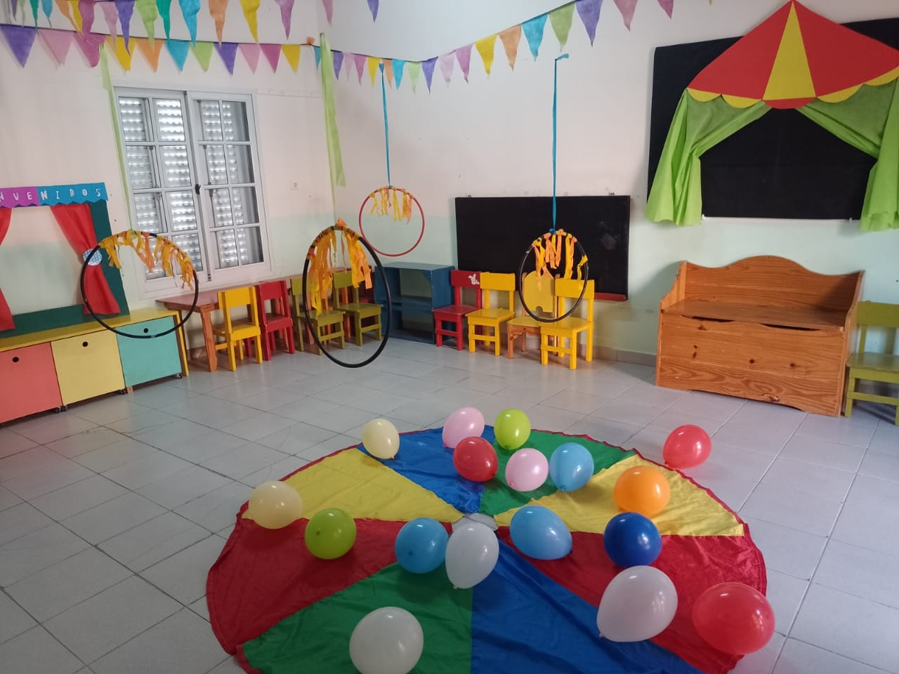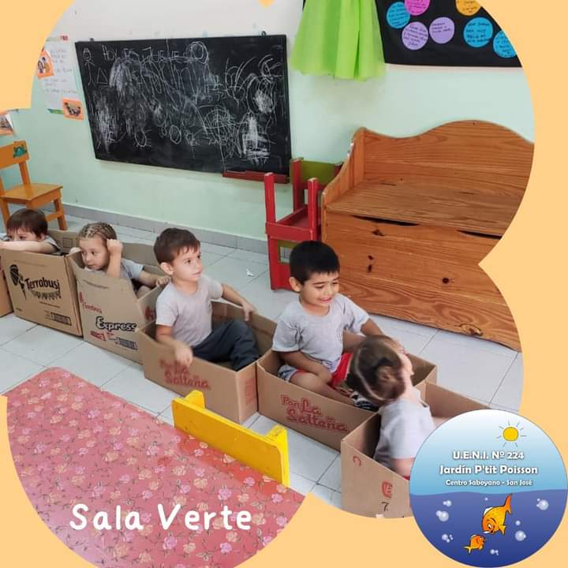 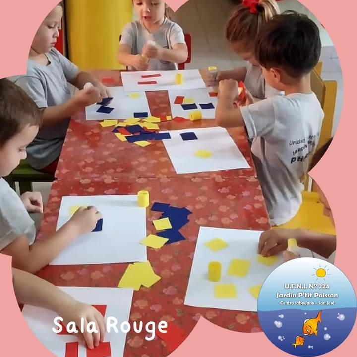 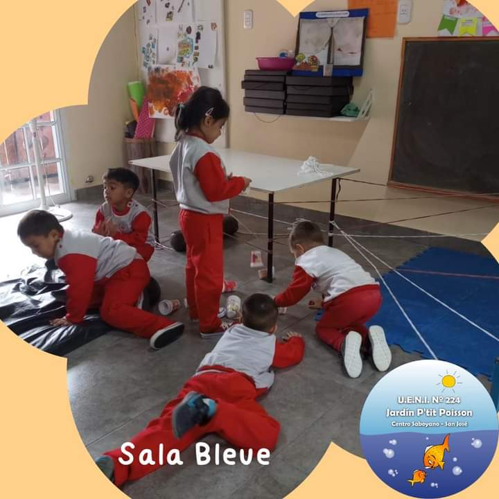
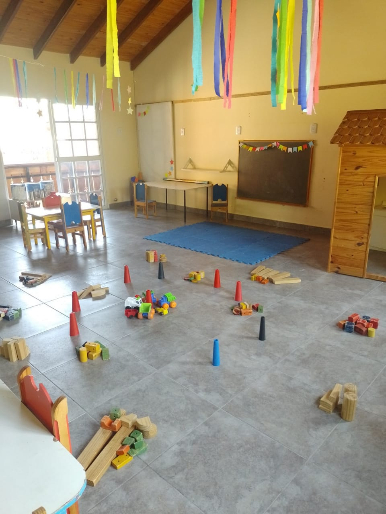 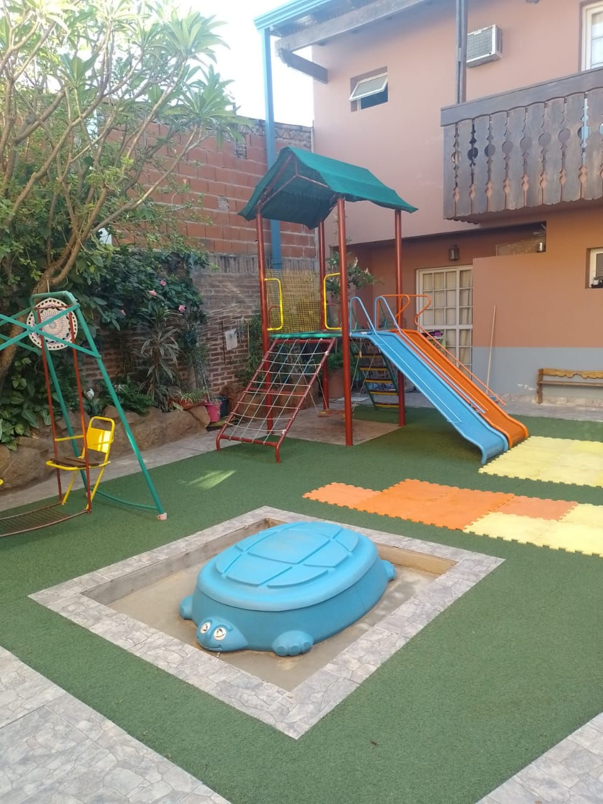
Actividades culturales
|En el Centro Saboyano de San José se han realizado y se realizan innumerables actividades culturales: presentaciones de libros, conciertos de piano, cursos de perfeccionamiento para docentes, investigaciones genealógicas, cursos de Historia y Geografía regional, conferencias sobre temas de interés para los locales como “la masonería en la colonia San José” o “El patrimonio arquitectónico en Pueblo Liebig”, exposiciones fotográficas como “Descendientes, los saboyanos de hoy”en los que se puede observar los rostro de quienes descienden de aquellos saboyanos que llegaron a partir de 1857 en profesiones absolutamente diferente a los de sus ancestros o “La otra tierra” en la que se muestra como son hoy los pueblos de donde partieron nuestros antepasados. Ambas muestras tuvieron un rotundo éxito no solo en la ciudad sino también en localidades vecinas.
La institución ha organizado para sus alumnos cuatro viajes a Francia; los jóvenes han podido conocer sus lugares de origen, la cultura y practicar la lengua. También algunos descendientes han participado en los viajes turísticos que se organizaron a Saboya y Alta Saboya, siempre tras las huellas de aquellos que una vez partieron hacia América del Sur.
A lo largo de los años, el intercambio se hizo constante e intenso. Se han recibido innumerable visitantes saboyanos, tanto de manera individual como grupal. Alain Blanc y Bruno Gillet intentaron enseñarnos a soplar el cuerno alpino, Pierre Chevallay nos hizo bailar con el grupo Sabaudia, nos visitó, además, la Compañía de Saboya. El Centro Saboyano de San José, posee un periódico bilingüe de aparición trimestral, el “Nous Voila” que desde su creación se distribuyó gratuitamente a través de Internet. Luego de un periodo sin salir, en el año 2022 volvió a aparecer en una salida anual y con textos solamente en español.
Por otra parte, la entidad posee una colección de libros “El Principito” en diferentes lenguas y dialectos. Son alrededor de 500 ejemplares que se lograron a través de intercambios con otros coleccionistas que hay en el mundo.